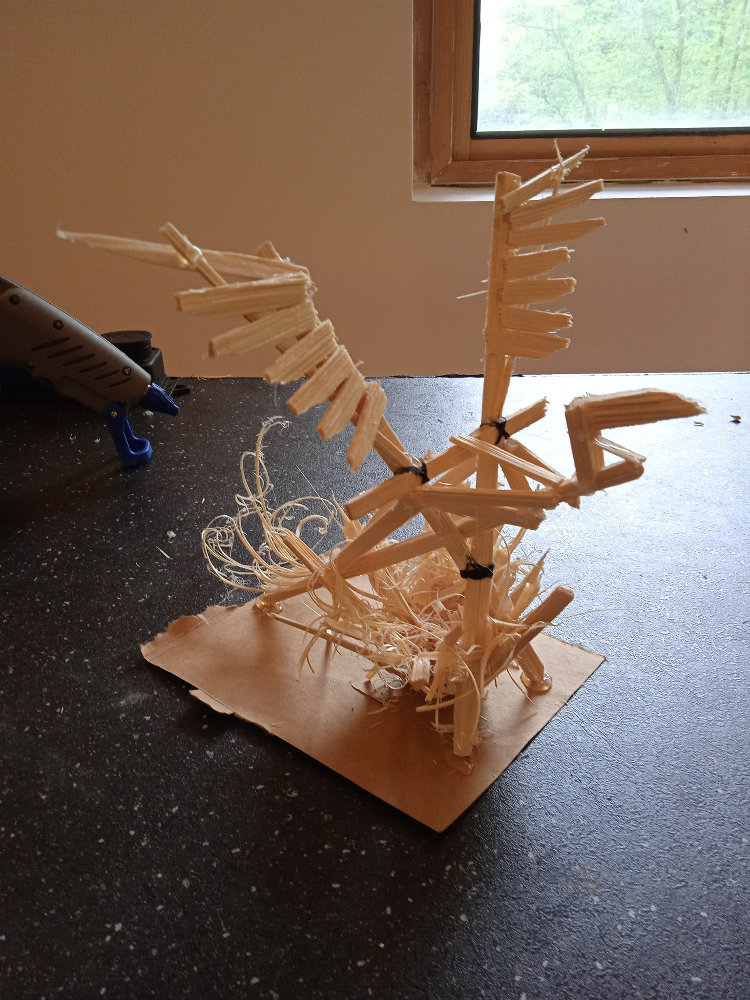
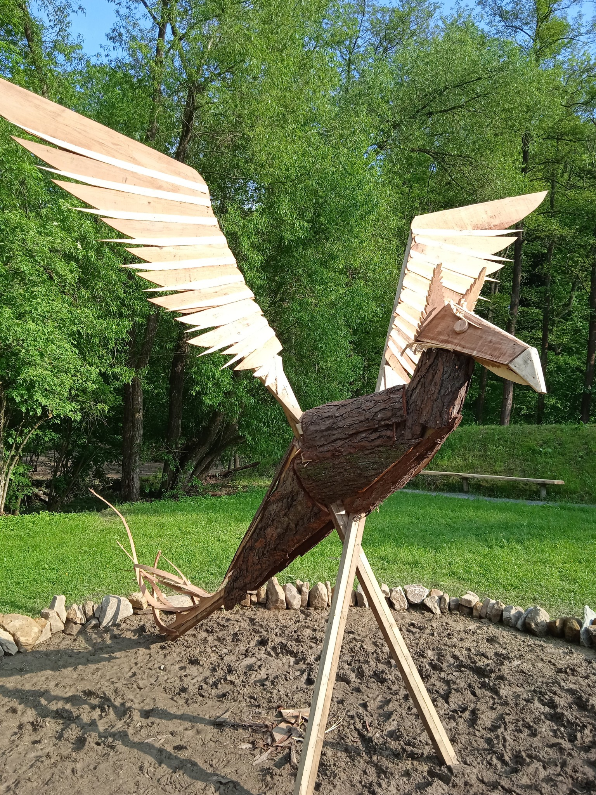
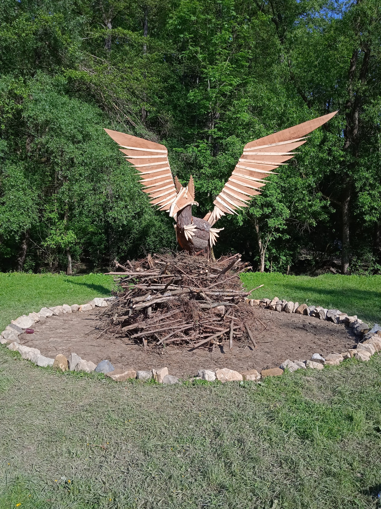
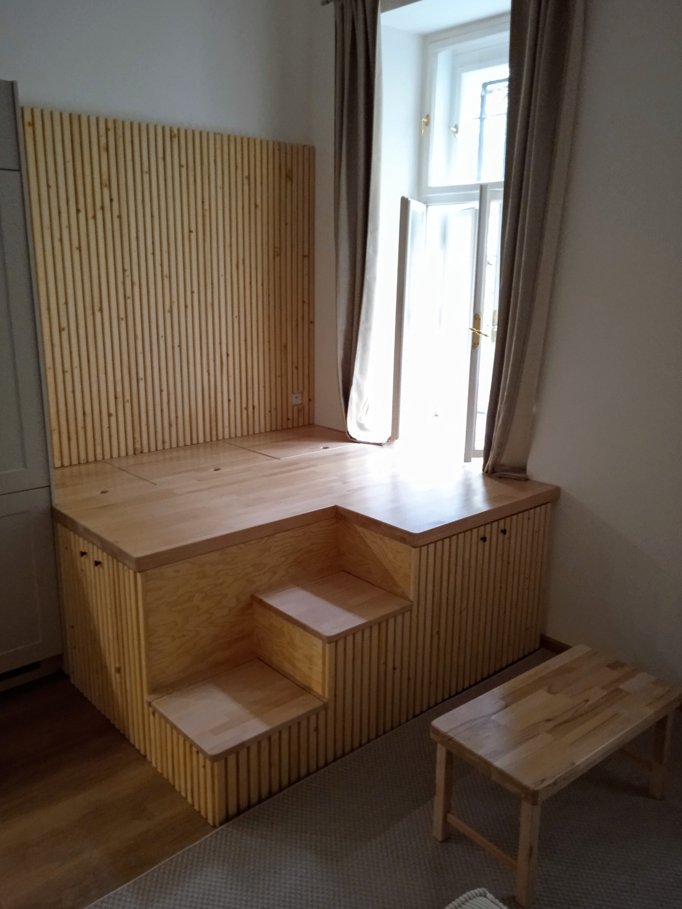
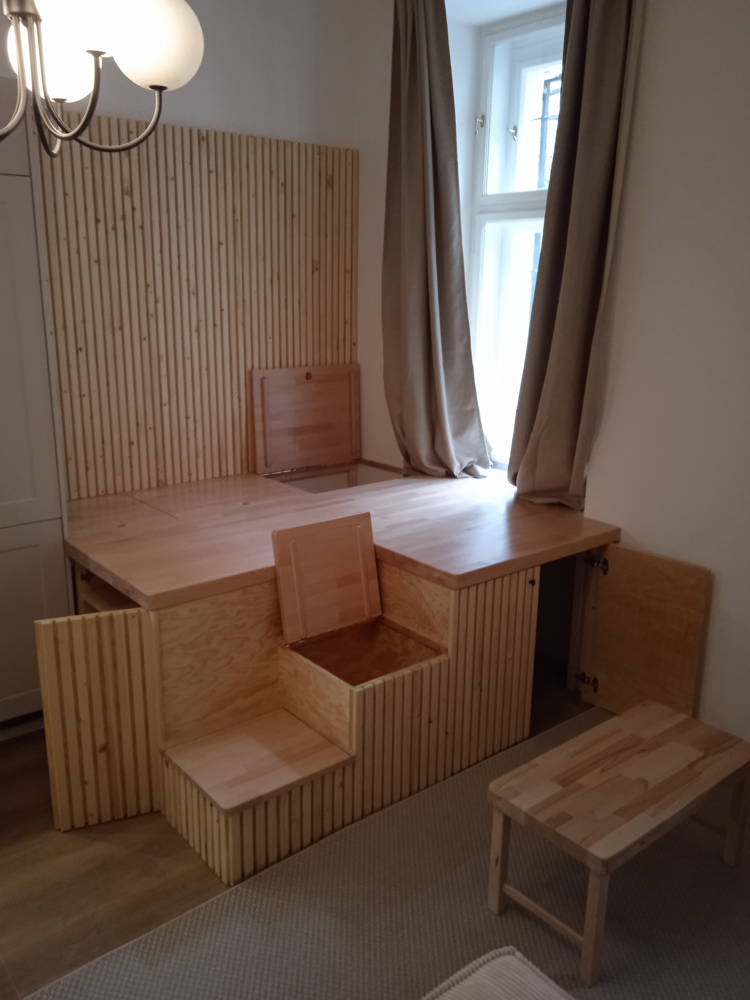
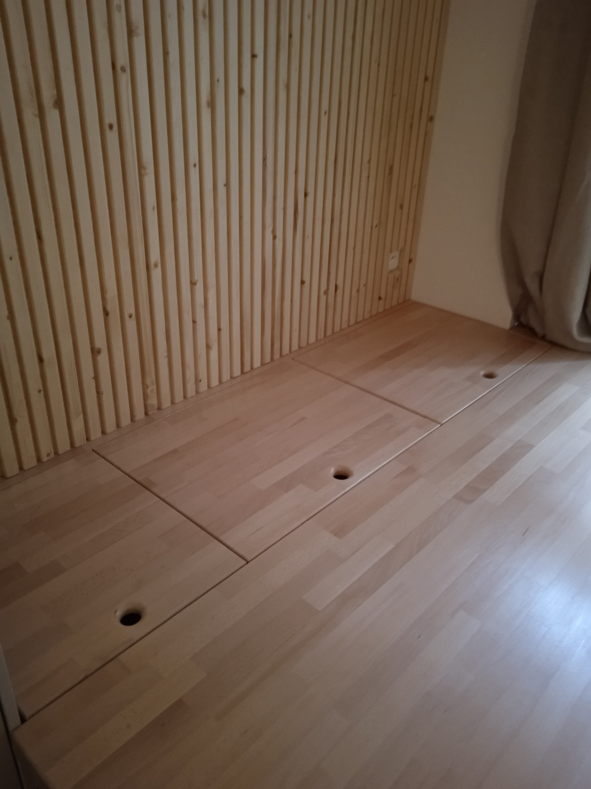

Portfólio
Zde naleznete výběr z projektů, které jsem dokončil. Můžete si prohlédnout příklady jednotlivých okruhů práce, kterým se věnuji. Například výroba nábytku na míru, dřevěné konstrukce, umělecká řezba, dekorace na festivalech aj. Jedná se především o samostatné práce, ale naleznete zde i týmové projekty, na kterých jsem spolupracoval s dalšími truhláři a svářeči.



Socha Fenixe (2023)
Na konci května jsem měl tu čest stavět sochu na Fenix Festival 2023. S pomocí Františka Voren Löfflera a pár pomocníků se nám tuto skoro 5m vysokou sochu podařilo i přes nepřízně počasí vztyčit. Fenix byl hlavní noc za zvuku didgerido spálen. Pocity bych přirovnal ke kreslení mandaly do písku, kdy vám to pak za sledování tisícovky lidí spláchne moře. Děkuji za tuto zkušenost.



Japanese corner (2023)
Máte doma málo úložného prostoru a vysoké stropy? Tento "Japanese corner" je řešení. Svým způsobem se jedná o platformu na které lze posedět, dát si čaj a zároveň získáte spoustu úložného místa. Tento je kombinace bukové masivní desky a vertikální konstrukce borovicové překližky s dřevěnými proužky./\